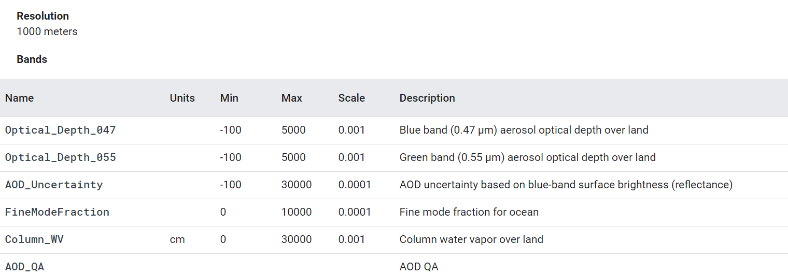
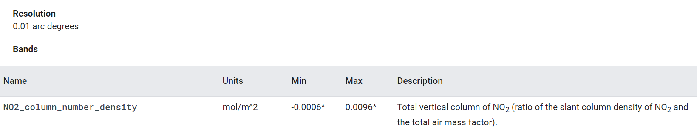
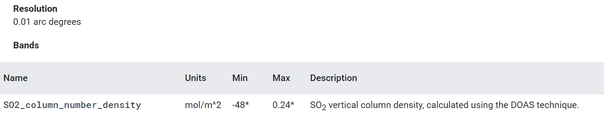
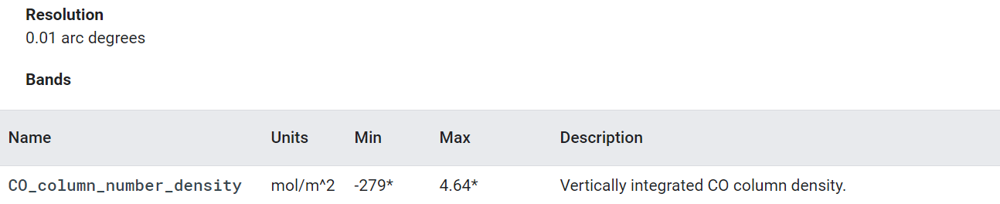

| City | 2018 | 2019 | 2020 |
|---|---|---|---|
| Delhi | 467.85 | 413.55 | 313 |
| Mumbai | 553.91 | 522.84 | 421.5 |
| Kolkata | 863.69 | 527.41 | 515.05 |
| Chennai | 876.64 | 733.18 | 651.2 |
Dataset Availability: 2000-02-01T00:00:00 - Present
Dataset Provider: NASA LP DAAC at the USGS EROS Center
The MCD19A2 V6 data product is a MODIS Terra and Aqua combined Multi-angle Implementation of Atmospheric Correction (MAIAC) Land Aerosol Optical Depth (AOD) gridded Level 2 product produced daily at 1 km resolution.
| City | 2018 | 2019 | 2020 |
|---|---|---|---|
| Delhi | 366.32 | 323.69 | 243 |
| Mumbai | 405.68 | 398.06 | 343 |
| Kolkata | 698.25 | 440.70 | 424.63 |
| Chennai | 726.15 | 540.25 | 459 |
Dataset Availability: 2000-02-01T00:00:00 - Present
Dataset Provider: NASA LP DAAC at the USGS EROS Center
The MCD19A2 V6 data product is a MODIS Terra and Aqua combined Multi-angle Implementation of Atmospheric Correction (MAIAC) Land Aerosol Optical Depth (AOD) gridded Level 2 product produced daily at 1 km resolution.
Values are in 10-6 mol/m2
| City | Mar/Apr 19 | Jan 20 | Mar/Apr 20 |
|---|---|---|---|
| Mumbai | 0.000149 | 0.000196 | 0.000081 |
| Delhi | 0.000217 | 0.000243 | 0.000097 |
| Kolkata | 0.000143 | 0.000148 | 0.000106 |
| Chennai | 0.000102 | 0.000114 | 0.00006 |
Dataset Availability: 2018-07-10T10:05:44 - Present
Dataset Provider: European Union/ESA/Copernicus
NRTI/L3_NO2: This dataset provides near real-time high-resolution imagery of NO2 concentrations. Nitrogen oxides (NO2 and NO) are important trace gases in the Earth’s atmosphere, present in both the troposphere and the stratosphere. They enter the atmosphere as a result of anthropogenic activities (notably fossil fuel combustion and biomass burning) and natural processes (wildfires, lightning, and microbiological processes in soils). Here, NO2 is used to represent concentrations of collective nitrogen oxides because during daytime, i.e. in the presence of sunlight, a photochemical cycle involving ozone (O3) converts NO into NO2 and vice versa on a timescale of minutes. The TROPOMI NO2 processing system is based on the algorithm developments for the DOMINO-2 product and for the EU QA4ECV NO2 reprocessed dataset for OMI, and has been adapted for TROPOMI. This retrieval-assimilation-modelling system uses the 3-dimensional global TM5-MP chemistry transport model at a resolution of 1x1 degree as an essential element.
Values are in 10-6 mol/m2
| City | Mar/Apr 19 | Jan 20 | Mar/Apr 20 |
|---|---|---|---|
| Mumbai | 0.000190 | 0.000210 | 0.000160 |
| Delhi | 0.000161 | 0.000037 | 0.000209 |
| Kolkata | 0.000392 | 0.000208 | -0.000060 |
| Chennai | 0.000071 | 0.000029 | -0.000042 |
Dataset Availability: 2018-07-10T11:17:44 - Present
Dataset Provider: European Union/ESA/Copernicus
NRTI/L3_SO2: This dataset provides near real-time high-resolution imagery of atmospheric sulfur dioxide (SO2) concentrations. Sulphur dioxide (SO2) enters the Earth’s atmosphere through both natural and anthropogenic processes. It plays a role in chemistry on a local and global scale and its impact ranges from short-term pollution to effects on climate. Only about 30% of the emitted SO2 comes from natural sources; the majority is of anthropogenic origin. SO2 emissions adversely affect human health and air quality. SO2 has an effect on climate through radiative forcing, via the formation of sulphate aerosols. Volcanic SO2 emissions can also pose a threat to aviation, along with volcanic ash. S5P/TROPOMI samples the Earth’s surface with a revisit time of one day with unprecedented spatial resolution of 3.5 x 7 km which allows the resolution of fine details including the detection of much smaller SO2 plumes.
Values are in 10-4 mol/m2
| City | Mar/Apr 19 | Jan 20 | Mar/Apr 20 |
|---|---|---|---|
| Mumbai | 0.0409 | 0.0432 | 0.0421 |
| Delhi | 0.0420 | 0.0424 | 0.0377 |
| Kolkata | 0.0487 | 0.0488 | 0.0472 |
| Chennai | 0.0440 | 0.0388 | 0.0425 |
Dataset Availability: 2018-11-22T12:00:13 - Present
Dataset Provider: European Union/ESA/Copernicus
NRTI/L3_CO: This dataset provides near real-time high-resolution imagery of CO concentrations. Carbon monoxide (CO) is an important atmospheric trace gas for understanding tropospheric chemistry. In certain urban areas, it is a major atmospheric pollutant. Main sources of CO are combustion of fossil fuels, biomass burning, and atmospheric oxidation of methane and other hydrocarbons. Whereas fossil fuel combustion is the main source of CO at northern mid-latitudes, the oxidation of isoprene and biomass burning play an important role in the tropics. TROPOMI on the Sentinel 5 Precursor (S5P) satellite observes the CO global abundance exploiting clear-sky and cloudy-sky Earth radiance measurements in the 2.3 µm spectral range of the shortwave infrared (SWIR) part of the solar spectrum. TROPOMI clear sky observations provide CO total columns with sensitivity to the tropospheric boundary layer. For cloudy atmospheres, the column sensitivity changes according to the light path.
